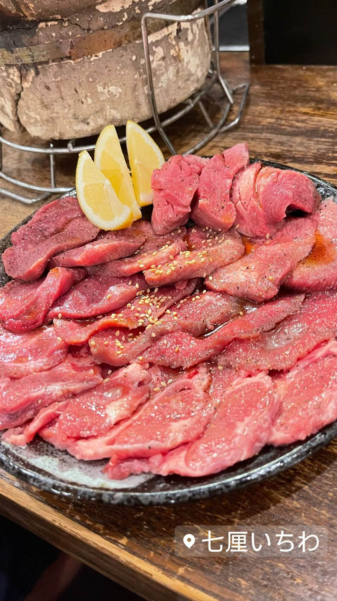

★ また行きたい焼肉で46位
焼肉ホルモン 七厘いちわ 経堂店
芝浦市場60年の仲卸から仕入れる新鮮ホルモンと牛タン全部盛り
七厘いちわ
経堂にあるホルモン専門の焼肉店。芝浦市場で60年続く仲卸から仕入れる新鮮なホルモンが自慢で、牛タン全部盛りなど部位の豊富さも魅力。千歳船橋の姉妹店「酒と焼肉でいちわ」の系列。
TRIVIA
豆知識
- 肉は芝浦市場で60年続く仲卸から仕入れている
- 千歳船橋の「酒と焼肉でいちわ」の姉妹店
REVIEWS
世間の評判
3.36食べログ
牛タン全部盛りのコスパの良さ
- 牛タン全部盛りなど新鮮で厚みのある肉質を非常に高く評価する声が多い
- LINE会員特典を使うと肉の値段が下がりコスパが良いという声が多い
- 特に席が狭いうえに炭火の熱がこもりやすく暑いと感じる人が複数いる
食べログ 口コミ194件
| 系譜 | 千歳船橋の「酒と焼肉でいちわ」の姉妹店 |
|---|---|
| 看板 | 牛タン全部盛り、和牛ユッケ、芝浦直送ホルモン |
| こだわり | 芝浦市場で60年続く仲卸から仕入れる新鮮なホルモン、保健所認定の和牛ユッケ |
| どこから | 23区の外れ・近郊 |
| 営業時間 | 月〜木 17:00-00:00 金 17:00-04:00 土 16:00-04:00 日 16:00-00:00 |
| 予算 | 夜 ¥5,000～¥5,999 |
| 定休日 | 無休 |
| 場所 | 経堂 東京都世田谷区経堂 |
| メモ | 経堂駅近く、大きな白提灯が目印のアットホームな町焼肉 |
食べたもの：焼肉
NEARBY
近い店・同じ系統の店
-
 ★
焼肉 白金高輪駅
炭焼 金竜山
ロンドン帰りの店主夫妻が焼く上タン塩とシャトーブリアン
夜 ¥20,000～¥29,999
★
焼肉 白金高輪駅
炭焼 金竜山
ロンドン帰りの店主夫妻が焼く上タン塩とシャトーブリアン
夜 ¥20,000～¥29,999
-
 ★
焼肉 関内駅
関内苑 本店
韓国職人仕込みのキムチとA5和牛の手打ち冷麺
昼 ¥1,000～¥1,999
★
焼肉 関内駅
関内苑 本店
韓国職人仕込みのキムチとA5和牛の手打ち冷麺
昼 ¥1,000～¥1,999
-
 ★
焼肉 鶯谷駅
焼肉 鶯谷園
1968年創業、半世紀以上続く良心価格の厚切りタン
夜 ¥6,000～¥7,999
★
焼肉 鶯谷駅
焼肉 鶯谷園
1968年創業、半世紀以上続く良心価格の厚切りタン
夜 ¥6,000～¥7,999
-
 ★
焼肉 不動前
焼肉しみず
牛タンの中心部だけを使う厚切り黒毛和牛タン
夜 ¥10,000～¥14,999
★
焼肉 不動前
焼肉しみず
牛タンの中心部だけを使う厚切り黒毛和牛タン
夜 ¥10,000～¥14,999
-
 ★
焼肉 飯田橋駅
好ちゃん 飯田橋本店
食べログ百名店に6年連続選出されたホルモン焼肉
夜 ¥6,000～¥7,999
★
焼肉 飯田橋駅
好ちゃん 飯田橋本店
食べログ百名店に6年連続選出されたホルモン焼肉
夜 ¥6,000～¥7,999
-
 ★
焼肉 町屋
正泰苑 総本店
ザガット東京焼肉部門1位に輝いた熟成タン
夜 ¥6,000～¥7,999
★
焼肉 町屋
正泰苑 総本店
ザガット東京焼肉部門1位に輝いた熟成タン
夜 ¥6,000～¥7,999